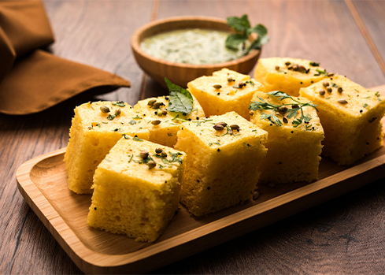

Pav Bhaji
Spices, butter, and mashed vegetables served with soft buns.

Gujarati SpecialKhaman Dhokla
Soft, fluffy, and savory chickpea flour steamed cakes.
 Street Food
Street Food
Vada Pav
The ultimate Mumbai street food. Deep-fried potato dumpling inside a bun.
Puran Poli
Sweet flatbread stuffed with lentil and jaggery filling.